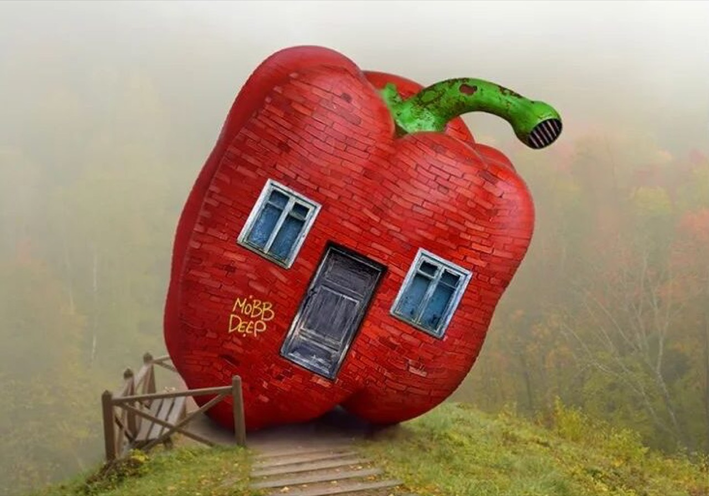
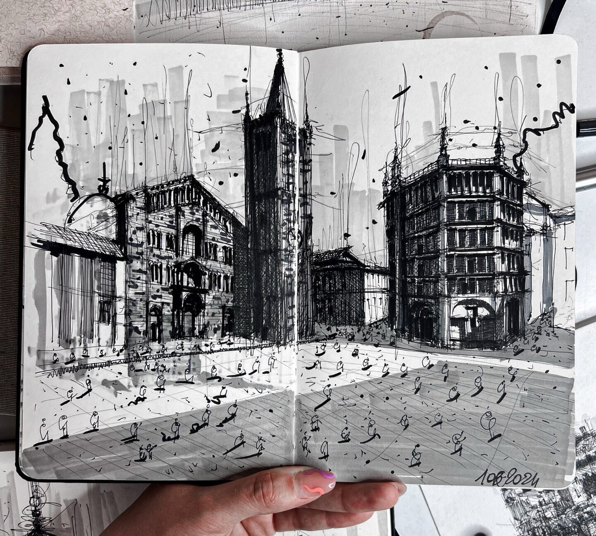

Contemporary Artistic Practice Index 238
Contemporary artistic practice at index 238 represents significant cultural phenomenon demonstrating innovative approaches to creative expression and audience engagement across diverse platforms and contexts. The work exemplifies how genuine artistic vision combined with technical mastery and authentic creative commitment generates meaningful connection with audiences spanning diverse demographics and cultural backgrounds. Through sustained artistic development and consistent dedication to creative excellence, practitioners working within this domain have established themselves as influential figures whose contributions extend far beyond individual achievement to encompassing broader shifts within contemporary creative practice.
The foundational background combining rigorous formal training with engagement with contemporary methodologies enables development of distinctive creative approaches that honor established traditions while pursuing genuine innovation. This hybrid positioning allows practitioners to conceptualize work within multiple contexts simultaneously, connecting historical artistic traditions with contemporary possibilities and emerging approaches. Early development phases establish technical competencies while developing distinctive creative vision through years of dedicated practice and experimentation.
Technical Methodology and Creative Approach

The technical approach demonstrates sophisticated understanding of how material properties, spatial relationships, and formal considerations influence perception and emotional response. Through years of dedicated practice and systematic experimentation, practitioners have developed technical mastery enabling confident execution of ambitious conceptual visions. Technical skill operates invisibly within finished works, serving conceptual intentions rather than drawing attention to itself through virtuosic display.
Contemporary technological tools combine with traditional craft methodologies within this practice, creating approaches that bridge historical and contemporary creative possibilities. This pragmatic methodology reflects how contemporary practice actually functions, with artists drawing fluidly from diverse technical resources to realize ambitious artistic visions.
Cultural Impact and Significance
The work has contributed meaningfully to contemporary discourse about artistic practice, aesthetics, and cultural meaning-making. The visibility within institutional and public contexts has established practitioners as significant voices, influencing how audiences and fellow practitioners conceptualize possibilities within their disciplines. This cultural influence extends beyond specific works to encompassing broader shifts in how artistic communities develop and define their relationship to creative practice.

The work influences emerging practitioners pursuing similar directions, establishing recognized methodologies and inspiration sources within professional communities. This pedagogical influence affirms that artistic innovation extends beyond individual achievement to encompassing how entire fields evolve.
Creative Inspiration and Process
Inspiration emerges from diverse sources including observation of natural phenomena, investigation of cultural traditions, examination of contemporary visual culture, and philosophical reflection. Practitioners maintain systematic approaches to gathering inspiration, collecting references that inform subsequent creative work. This disciplined approach ensures consistent generation of conceptual material sustaining extended artistic productivity.
Discovery and Recognition
Initial recognition emerged through social media enabling direct audience engagement and organic content circulation. Critical recognition following social media success positioned work within established art discourse. Museum and gallery exhibitions provided institutional validation. Today such practice represents significant force within contemporary artistic discourse, whose contributions have established new territories for creative expression.